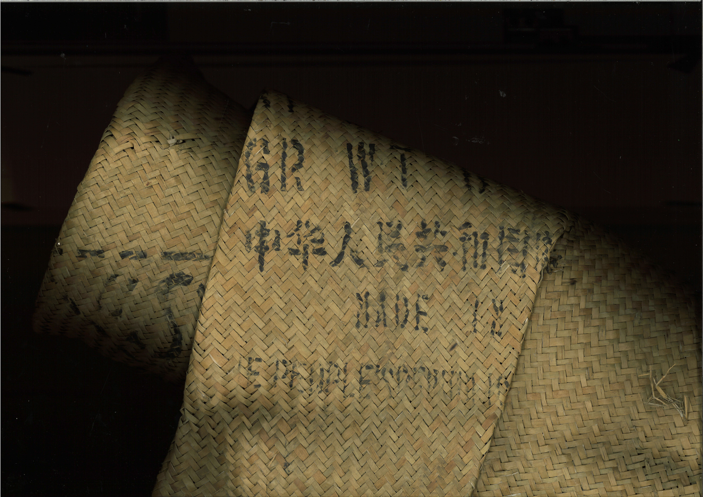
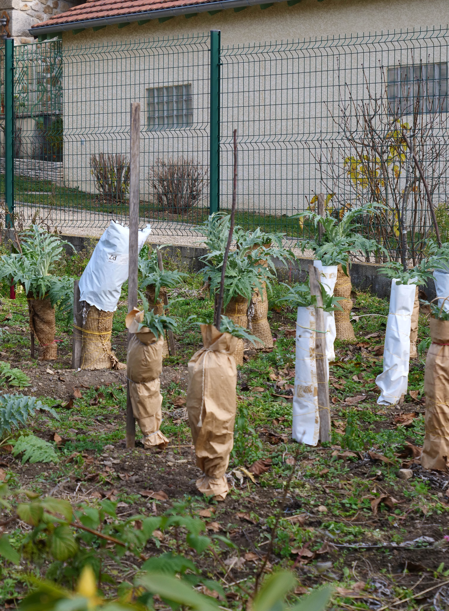
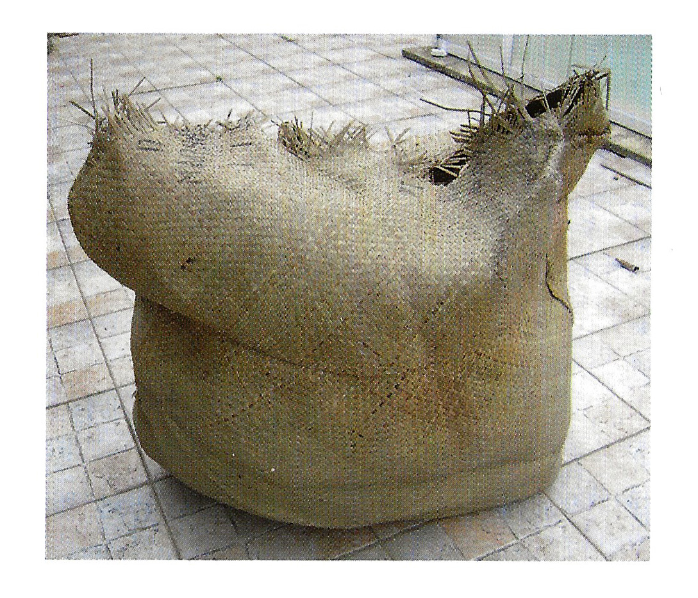
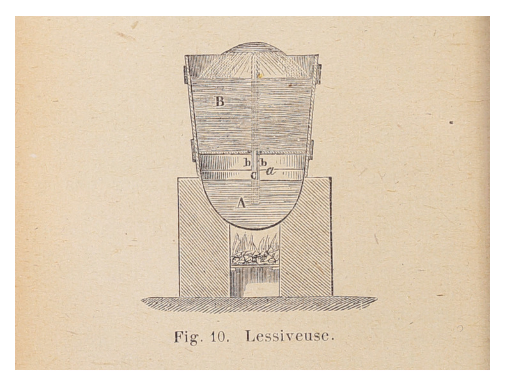
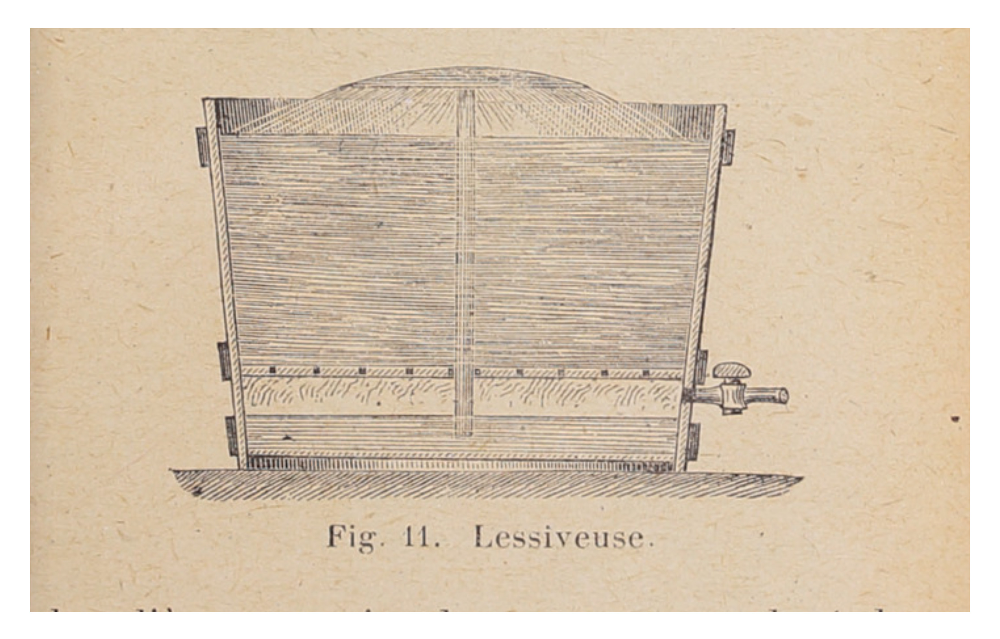
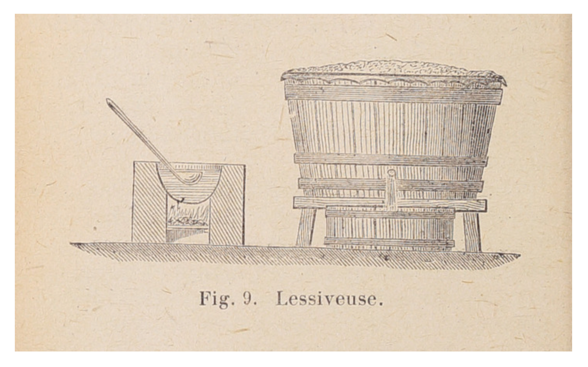
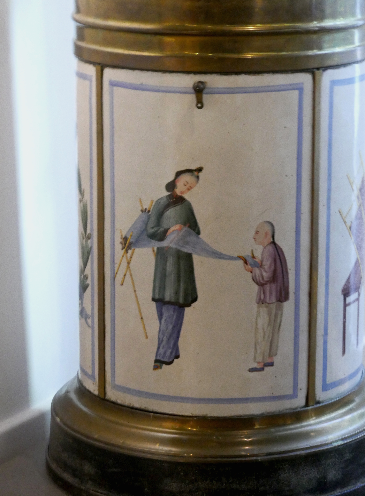
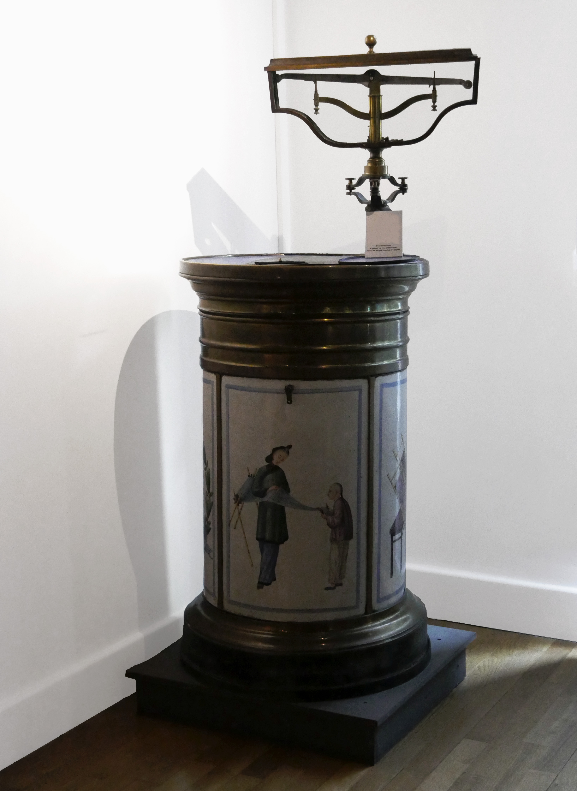
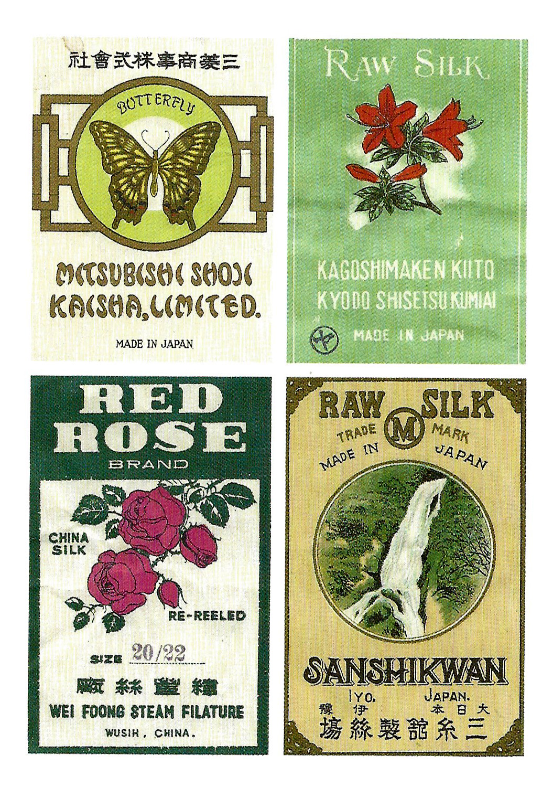

 Sac de jute pour l'import de la soie de Chine

Brombyx Mori
Magnanerie sériciculture, cocom Bombyx Mori, filature, la soie de Grefeuille
 Le paillage pour faire blanchir les cardons
 Le paillage des balles de soie
 Lessiveuse - schéma roret
 Lessiveuse - schéma roret
 Lessiveuse - schéma roret
 Lessiveuse à soie - décreusage
 Lessiveuse à soie - décreusage
Le décreusage, moulinage, sériciculture
 Etiquette de sériciculture de soie de Chine et Japon